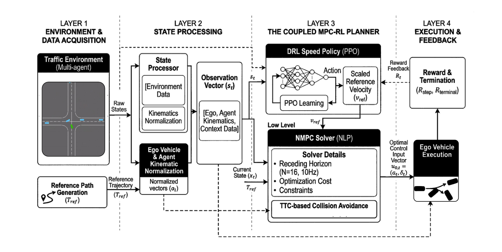
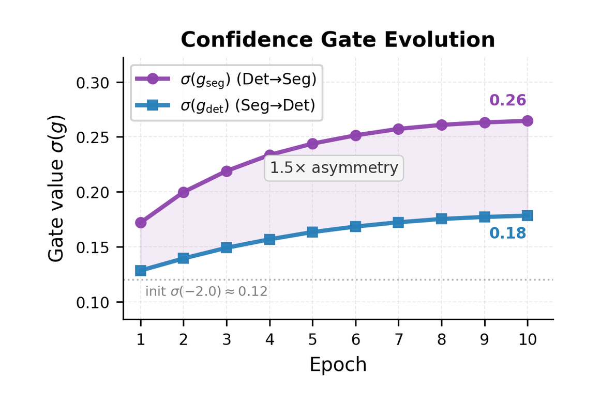
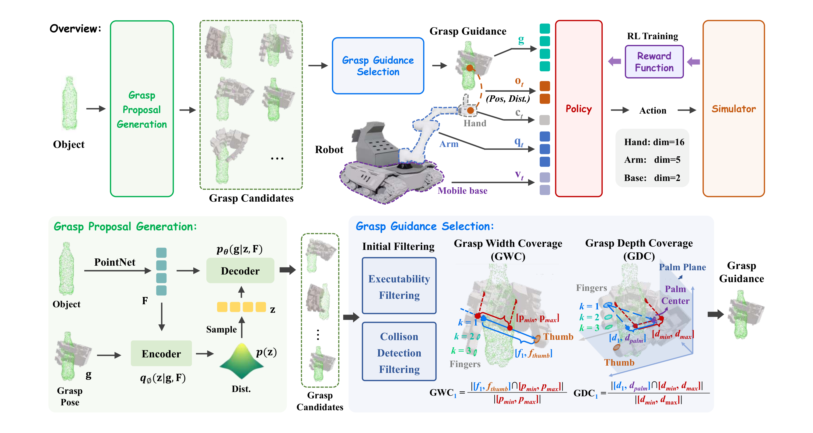
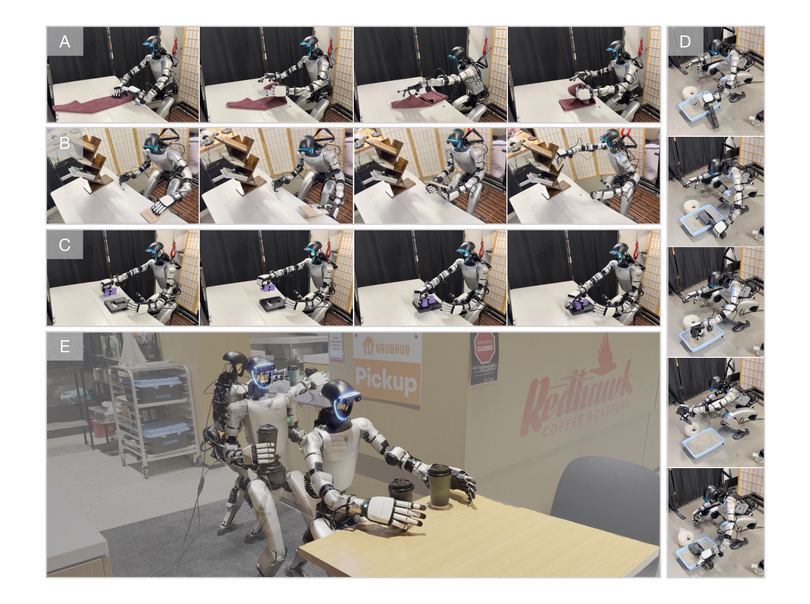
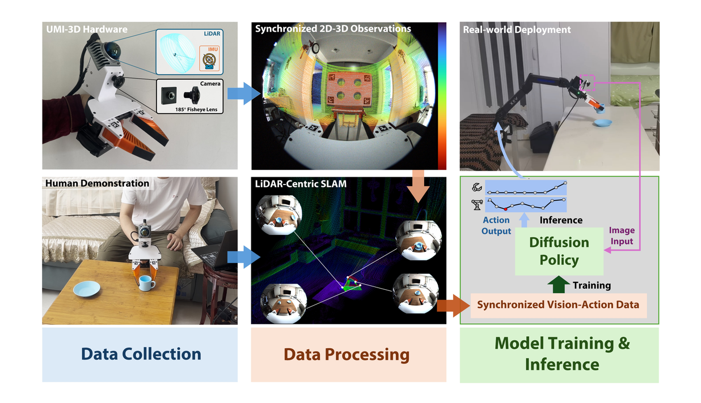
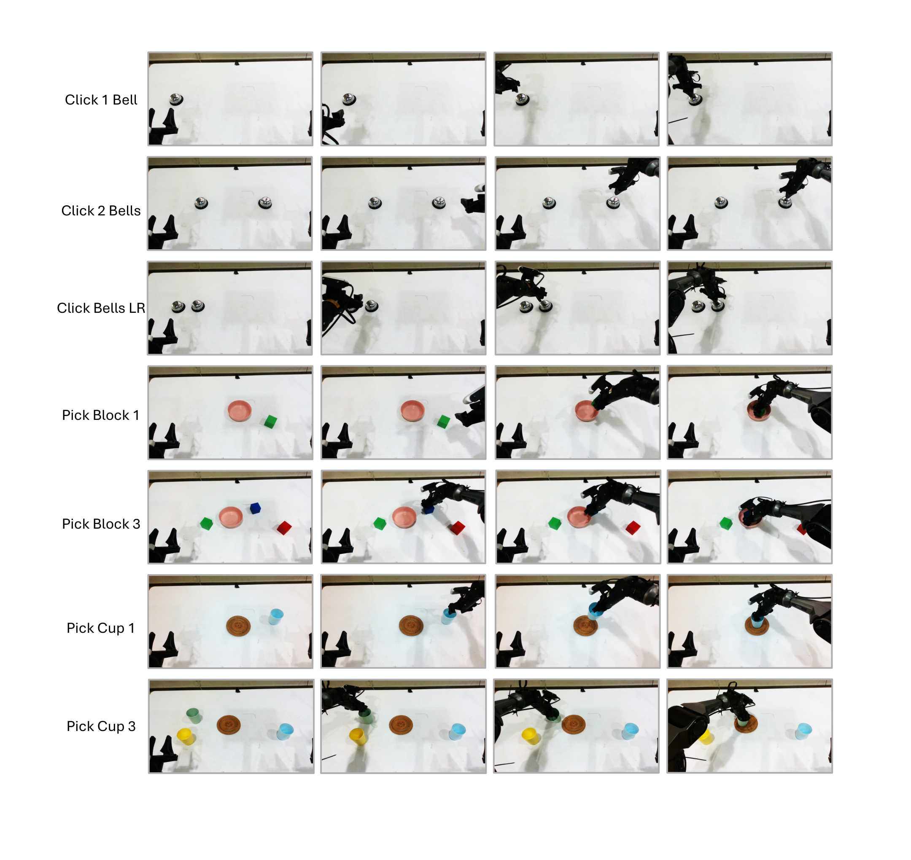
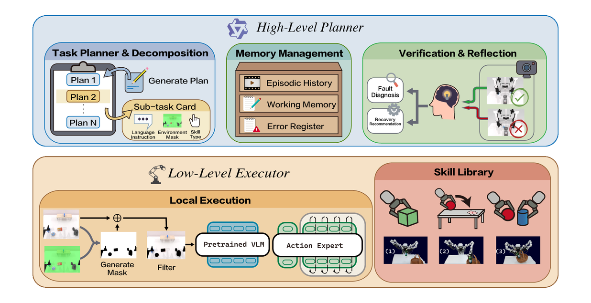
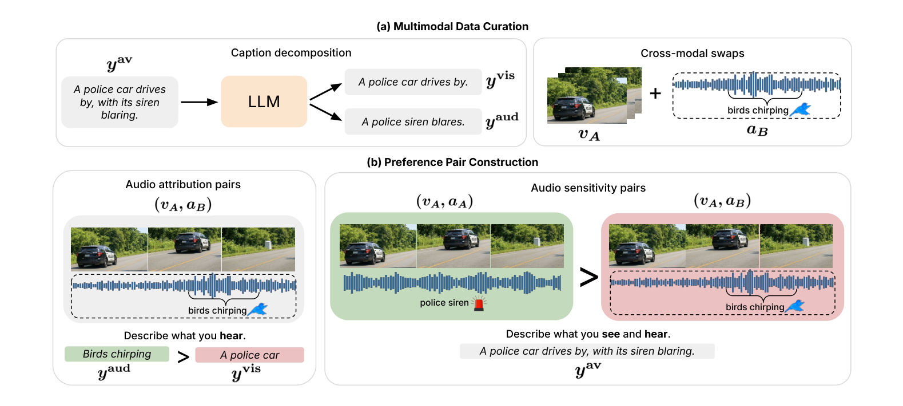
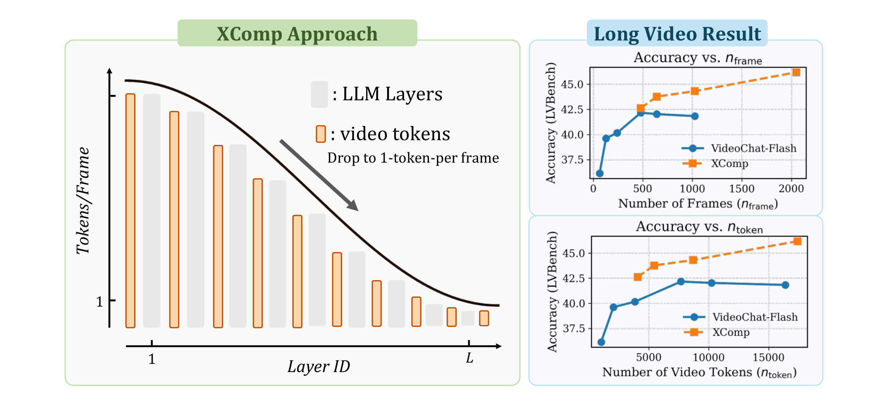

arXiv 每日摘要
归档运行：2026-04-17 08:15:25
arXiv 每日摘要
arxiv-daily-autonomy-robotics-vlm-vla
聚焦自动驾驶、机械臂 / 操控、VLA 与 VLM。首页按手机优先设计：先看总览，再看词云和主题卡片，最后展开具体论文。
Job ID054d56957dbb
Run Time2026-04-17 08:15:25
Schedule0 0 * * *
本周论文20
平均实现概率71%
开源 / 可部署1 / 10
快速筛选
点词云、点主题，手机上直接筛选今天最值得重点看的 3 篇
编辑优先级1
1. **HiVLA: A Visual-Grounded-Centric Hierarchical Embodied Manipulation System** —— 分层 VLA 设计清楚，兼顾推理和执行，且有真实世界验证。
2
2. **FastGrasp: Learning-based Whole-body Control method for Fast Dexterous Grasping with Mobile Manipulators** —— 全身控制 + 触觉反馈 + 移动操作，离真实机器人落地很近。
3
3. **Mosaic: An Extensible Framework for Composing Rule-Based and Learned Motion Planners** —— 自动驾驶里“可解释 + 可组合 + 可验证”的方向，工程价值很高。
最近 7 天主题词云
2026-04-16 — 2026-04-17 · 20 篇 · 373 个词词云图可视化最近 7 天词频
![最近 7 天主题词云]()
这是一张真正生成出来的主题词云图。下面的词条仍然可以点击筛选论文，图和交互同时保留。
窗口长度2026-04-16 — 2026-04-17
累计论文20
高频词数量18
平均实现概率71%
开源 / 可部署1 / 10
周判断偏研究型、择优看
阅读框架图
先看流程，再看论文细节解读流程从输入到判断
![论文阅读框架图]()
这张框架图把每日阅读拆成四步：输入、理解、判断、输出。它不是论文原始结构图，而是你浏览这份日报时的阅读导航。
整体判断
今日总评今天的 10 篇里，最明显的趋势是：自动驾驶继续往“混合式规划”走，操控和 VLA 则更强调分层、记忆、触觉和真实执行闭环；VLM 侧重点则是可靠性和 token 效率。整体上偏方法与系统落地，纯 survey 很少，值得优先看的是真正能把“推理—规划—执行”拆开的工作。
自动驾驶
3 篇
Beyond Conservative Automated Driving in Multi-Agent Scenarios via Coupled Model Predictive Control and Deep Reinforcement Learning
2604.13891v1
论文提出 MPC-RL 混合框架，在三种交通密度下都优于纯 MPC 和端到端 RL，并展示了到高速并线场景的零样本迁移。

实现概率 75%
开源：不确定
可部署：是 —— 有 MPC 骨架和迁移实验，比较像能接入现有规划栈的方案。
Beyond Conservative Automated Driving in Multi-Agent Scenarios via Coupled Model Predictive Control and Deep Reinforcement Learning
2604.13891v1

摘要总结论文提出 MPC-RL 混合框架，在三种交通密度下都优于纯 MPC 和端到端 RL，并展示了到高速并线场景的零样本迁移。
开源判断不确定
部署判断是 —— 有 MPC 骨架和迁移实验，比较像能接入现有规划栈的方案。
实现概率75% —— 结构清晰、分块容易落地，但真实交通中的安全边界和泛化仍是核心难点。
beyondconservativeautomateddrivingmulti-agentscenarioscoupledpredictiveBeyondConservativeAutomatedDrivingMulti-Agent
Mosaic: An Extensible Framework for Composing Rule-Based and Learned Motion Planners
2604.13853v1
作者提出 Mosaic，通过轨迹验证、统一打分和最优选择，把 rule-based 与 learned planner 组合到同一决策框架中；在 nuPlan 上取得强结果，并降低了 at-fault collision…
实现概率 82%
开源：不确定
可部署：是 —— 更像可插入现有自动驾驶规划链路的中间层。
Mosaic: An Extensible Framework for Composing Rule-Based and Learned Motion Planners
2604.13853v1
摘要总结作者提出 Mosaic，通过轨迹验证、统一打分和最优选择，把 rule-based 与 learned planner 组合到同一决策框架中；在 nuPlan 上取得强结果，并降低了 at-fault collision。
开源判断不确定
部署判断是 —— 更像可插入现有自动驾驶规划链路的中间层。
实现概率82% —— 框架型思路很工程化，核心是系统集成而不是单点黑科技。
mosaicextensibleframeworkcomposingrule-basedlearnedmotionplannersMosaicExtensibleFrameworkComposingRule-Based
Radar-Camera BEV Multi-Task Learning with Cross-Task Attention Bridge for Joint 3D Detection and Segmentation
2604.12918v1
论文提出 CTAB，在雷达-相机融合的多任务框架中交换检测与分割特征，改善分割边界和语义一致性；在 nuScenes 上取得稳定收益。

实现概率 78%
开源：不确定
可部署：是 —— 如果已有雷达+相机 BEV 体系，这类模块最容易工程化。
Radar-Camera BEV Multi-Task Learning with Cross-Task Attention Bridge for Joint 3D Detection and Segmentation
2604.12918v1

摘要总结论文提出 CTAB，在雷达-相机融合的多任务框架中交换检测与分割特征，改善分割边界和语义一致性；在 nuScenes 上取得稳定收益。
开源判断不确定
部署判断是 —— 如果已有雷达+相机 BEV 体系，这类模块最容易工程化。
实现概率78% —— 模块清晰、基于常见传感器栈，落地门槛主要在数据和训练配方。
radar-cameraBEVmulti-tasklearningcross-taskattentionbridgejointRadar-CameraMulti-TaskLearningCross-Task
机械臂 / 操控
3 篇
FastGrasp: Learning-based Whole-body Control method for Fast Dexterous Grasping with Mobile Manipulators
2604.12879v1
作者提出 FastGrasp：先用条件 VAE 生成抓取候选，再用强化学习做全身协同控制，并引入触觉反馈做实时修正；仿真和真实实验都验证了快抓能力。

实现概率 70%
开源：不确定
可部署：是 —— 已经做了真实系统验证，属于“能上机器人”的一类。
FastGrasp: Learning-based Whole-body Control method for Fast Dexterous Grasping with Mobile Manipulators
2604.12879v1

摘要总结作者提出 FastGrasp：先用条件 VAE 生成抓取候选，再用强化学习做全身协同控制，并引入触觉反馈做实时修正；仿真和真实实验都验证了快抓能力。
开源判断不确定
部署判断是 —— 已经做了真实系统验证，属于“能上机器人”的一类。
实现概率70% —— 思路完整，但对底盘、手部、触觉和控制同步要求高，硬件依赖重。
fastgrasplearning-basedwhole-bodycontrolfastdexterousgraspingmobileFastGraspLearning-basedWhole-bodyControlFast
Learning Versatile Humanoid Manipulation with Touch Dreaming
2604.13015v1
论文先做 RL 全身控制和人形数据采集，再训练一个把视觉、 proprioception 和触觉结合起来的 Transformer；通过 touch dreaming 提升接触表征，在五个接触密集任务上明显优于基线。

实现概率 68%
开源：不确定
可部署：是 —— 如果具备人形平台和触觉传感，这套方法很像可持续迭代的训练管线。
Learning Versatile Humanoid Manipulation with Touch Dreaming
2604.13015v1

摘要总结论文先做 RL 全身控制和人形数据采集，再训练一个把视觉、 proprioception 和触觉结合起来的 Transformer；通过 touch dreaming 提升接触表征，在五个接触密集任务上明显优于基线。
开源判断不确定
部署判断是 —— 如果具备人形平台和触觉传感，这套方法很像可持续迭代的训练管线。
实现概率68% —— 算法主线清楚，但人形数据采集和全身执行是主要成本。
learningversatilehumanoidmanipulationtouchdreaming机械臂操控LearningVersatileHumanoidManipulationTouch
UMI-3D: Extending Universal Manipulation Interface from Vision-Limited to 3D Spatial Perception
2604.14089v1
UMI-3D 在 wrist-mounted 采集系统里加入轻量 LiDAR，解决遮挡、动态场景和定位失败；再配合时空标定和多模态同步，让示教数据更稳、更准，真实任务成功率随之提升。

实现概率 66%
开源：不确定
可部署：是 —— 这类采集系统最容易在实验室和数据工厂先落地。
UMI-3D: Extending Universal Manipulation Interface from Vision-Limited to 3D Spatial Perception
2604.14089v1

摘要总结UMI-3D 在 wrist-mounted 采集系统里加入轻量 LiDAR，解决遮挡、动态场景和定位失败；再配合时空标定和多模态同步，让示教数据更稳、更准，真实任务成功率随之提升。
开源判断不确定
部署判断是 —— 这类采集系统最容易在实验室和数据工厂先落地。
实现概率66% —— 系统路径合理，但需要专门硬件和较强的标定能力。
umi-3dextendinguniversalmanipulationinterfacevision-limitedspatialperceptionUMI-3DExtendingUniversalManipulationInterface
VLA
2 篇
HiVLA: A Visual-Grounded-Centric Hierarchical Embodied Manipulation System
2604.14125v1
作者提出 HiVLA：高层用 VLM 做任务分解和视觉定位，输出子任务与目标框；低层用 diffusion Transformer 执行动作，并通过级联交叉注意力融合全局语义、局部裁剪和技能信息。论文声称在仿真和真实世界…

实现概率 72%
开源：不确定
可部署：是 —— 既有真实实验又有明确的模块边界，比较像可工程化的 VLA 路线。
HiVLA: A Visual-Grounded-Centric Hierarchical Embodied Manipulation System
2604.14125v1

摘要总结作者提出 HiVLA：高层用 VLM 做任务分解和视觉定位，输出子任务与目标框；低层用 diffusion Transformer 执行动作，并通过级联交叉注意力融合全局语义、局部裁剪和技能信息。论文声称在仿真和真实世界都明显优于端到端基线。
开源判断不确定
部署判断是 —— 既有真实实验又有明确的模块边界，比较像可工程化的 VLA 路线。
实现概率72% —— 分层设计很合理，难点在高层定位和低层执行之间的接口稳定性。
hivlavisual-grounded-centrichierarchicalembodiedmanipulationVLA机械臂分层控制HiVLAVisual-Grounded-CentricHierarchicalEmbodiedManipulation
Goal2Skill: Long-Horizon Manipulation with Adaptive Planning and Reflection
2604.13942v1
论文提出一个双系统框架：高层 VLM 负责任务记忆、目标分解、结果验证和错误纠正，低层 VLA 执行具体动作；通过“规划-执行-反思”闭环提升长时序操作稳定性。

实现概率 74%
开源：不确定
可部署：不确定 —— 方向对，但长时序、部分可观测环境下的稳定性还要看更多验证。
Goal2Skill: Long-Horizon Manipulation with Adaptive Planning and Reflection
2604.13942v1

摘要总结论文提出一个双系统框架：高层 VLM 负责任务记忆、目标分解、结果验证和错误纠正，低层 VLA 执行具体动作；通过“规划-执行-反思”闭环提升长时序操作稳定性。
开源判断不确定
部署判断不确定 —— 方向对，但长时序、部分可观测环境下的稳定性还要看更多验证。
实现概率74% —— 系统逻辑自然，但长时序任务的误差积累和恢复仍会很难。
goal2skilllong-horizonmanipulationadaptiveplanningreflectionVLA机械臂Goal2SkillLong-HorizonManipulationAdaptivePlanning
VLM
2 篇
Don't Let the Video Speak: Audio-Contrastive Preference Optimization for Audio-Visual Language Models
2604.14129v1
论文提出 ACPO，用输出对比和输入对比两个目标去惩罚模型忽视真实音频信号的行为；作者报告它能显著提升音频 grounding，同时不明显牺牲整体多模态能力。

实现概率 84%
开源：不确定
可部署：不确定 —— 更像训练层改造，不是独立可部署系统。
Don't Let the Video Speak: Audio-Contrastive Preference Optimization for Audio-Visual Language Models
2604.14129v1

摘要总结论文提出 ACPO，用输出对比和输入对比两个目标去惩罚模型忽视真实音频信号的行为；作者报告它能显著提升音频 grounding，同时不明显牺牲整体多模态能力。
开源判断不确定
部署判断不确定 —— 更像训练层改造，不是独立可部署系统。
实现概率84% —— 优化目标很清楚，属于比较容易复现和集成的训练策略。
donletspeakaudio-contrastivepreferenceoptimizationaudio-visualmodelsDonLetSpeakAudio-ContrastivePreference
One Token per Highly Selective Frame: Towards Extreme Compression for Long Video Understanding
2604.14149v1
论文提出可学习的逐层 token 压缩和基于问题相关性的帧选择，减少长视频中的冗余 token；同时通过局部注意力缓解长上下文的位置偏置，让模型能看更多帧。

实现概率 79%
开源：不确定
可部署：不确定 —— 适合做 VLM 加速模块，但不属于单独产品。
One Token per Highly Selective Frame: Towards Extreme Compression for Long Video Understanding
2604.14149v1

摘要总结论文提出可学习的逐层 token 压缩和基于问题相关性的帧选择，减少长视频中的冗余 token；同时通过局部注意力缓解长上下文的位置偏置，让模型能看更多帧。
开源判断不确定
部署判断不确定 —— 适合做 VLM 加速模块，但不属于单独产品。
实现概率79% —— 压缩思路比较工程化，但收益高度依赖模型与视频分布。
onetokenperhighlyselectiveframeextremecompressionOneTokenHighlySelective